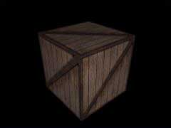

|
第07課 |
 |
|  |
光照和鍵盤控制:
在這一課裡，我們將添加光照和鍵盤控制，它讓程序看起來更美觀。 |
|
 |
 |
這一課我會教您如何使用三種不同的紋理濾波方式。教您如何使用鍵盤來移動場景中的對象，還會教您在OpenGL場景中應用簡單的光照。這一課包含了很多內容，如果您對前面的課程有疑問的話，先回頭複習一下。進入後面的代碼之前，很好的理解基礎知識十分重要。
我們還是在第一課的代碼上加以修改。跟以前不一樣的是，只要有任何大的改動，我都會寫出整段代碼。程序開始，我們先加上幾個新的變量。 |
|
|
下面幾行是新的。我們增加三個布爾變量。 light 變量跟蹤光照是否打開。變量lp和fp用來存儲'L'
和'F'鍵是否按下的狀態。後面我會解釋這些變量的重要性。現在，先放在一邊吧。 |
|
BOOL light; // 光源的開/關
BOOL lp; // L鍵按下了麼?
BOOL fp; // F鍵按下了麼?
|
現在設置5個變量來控制繞x軸和y軸旋轉角度的步長，以及繞x軸和y軸的旋轉速度。另外還創建了一個z變量來控制進入屏幕深處的距離。 |
|
GLfloat xrot; // X 旋轉
GLfloat yrot; // Y 旋轉
GLfloat xspeed; // X 旋轉速度
GLfloat yspeed; // Y 旋轉速度
GLfloat z=-5.0f; // 深入屏幕的距離
|
接著設置用來創建光源的數組。我們將使用兩種不同的光。第一種稱為環境光。環境光來自於四面八方。所有場景中的對象都處於環境光的照射中。第二種類型的光源叫做漫射光。漫射光由特定的光源產生，並在您的場景中的對象表面上產生反射。處於漫射光直接照射下的任何對像表面都變得很亮，而幾乎未被照射到的區域就顯得要暗一些。這樣在我們所創建的木板箱的稜邊上就會產生的很不錯的陰影效果。
創建光源的過程和顏色的創建完全一致。前三個參數分別是RGB三色份量，最後一個是alpha通道參數。
因此，下面的代碼我們得到的是半亮(0.5f)的白色環境光。如果沒有環境光，未被漫射光照到的地方會變得十分黑暗。 |
|
GLfloat LightAmbient[]= { 0.5f, 0.5f, 0.5f, 1.0f }; // 環境光參數
|
下一行代碼我們生成最亮的漫射光。所有的參數值都取成最大值1.0f。它將照在我們木板箱的前面，看起來挺好。 |
|
GLfloat LightDiffuse[]= { 1.0f, 1.0f, 1.0f, 1.0f }; // 漫射光參數
|
最後我們保存光源的位置。前三個參數和glTranslate中的一樣。依次分別是XYZ軸上的位移。由於我們想要光線直接照射在木箱的正面，所以XY軸上的位移都是0.0f。第三個值是Z軸上的位移。為了保證光線總在木箱的前面，所以我們將光源的位置朝著觀察者(就是您哪。)挪出屏幕。我們通常將屏幕也就是顯示器的屏幕玻璃所處的位置稱作Z軸的0.0f點。所以Z軸上的位移最後定為2.0f。假如您能夠看見光源的話，它就浮在您顯示器的前方。當然，如果木箱不在顯示器的屏幕玻璃後面的話，您也無法看見箱子。『譯者註：我很欣賞NeHe的耐心。說真的有時我都打煩了，這麼簡單的事他這麼廢話幹嘛？但如果什麼都清楚，您還會翻著這樣的頁面看個沒完麼？』
最後一個參數取為1.0f。這將告訴OpenGL這裡指定的坐標就是光源的位置，以後的教程中我會多加解釋。 |
|
GLfloat LightPosition[]= { 0.0f, 0.0f, 2.0f, 1.0f }; // 光源位置
|
filter 變量跟蹤顯示時所採用的紋理類型。第一種紋理(texture 0) 使用gl_nearest(不光滑)濾波方式構建。第二種紋理
(texture 1) 使用gl_linear(線性濾波) 方式，離屏幕越近的圖像看起來就越光滑。第三種紋理 (texture 2) 使用
mipmapped濾波方式,這將創建一個外觀十分優秀的紋理。根據我們的使用類型，filter 變量的值分別等於 0, 1 或 2 。下面我們從第一種紋理開始。
GLuint texture[3] 為三種不同紋理分配儲存空間。它們分別位於在 texture[0], texture[1] 和 texture[2]中。 |
|
GLuint filter; // 濾波類型
GLuint texture[3]; // 3種紋理的儲存空間
|
現在載入一個位圖，並用它創建三種不同的紋理。這一課使用glaux輔助庫來載入位圖，因此在編譯時您應該確認是否包含了glaux庫。我知道Delphi和VC++都包含了glaux庫，但別的語言不能保證都有。『譯者註：glaux是OpenGL輔助庫，根據OpenGL的跨平台特性，所有平台上的代碼都應通用。但輔助庫不是正式的OpenGL標準庫，沒有出現在所有的平台上。但正好在Win32平台上可用。呵呵，BCB當然也沒問題了。』這裡我只對新增的代碼做註解。如果您對某行代碼有疑問的話，請查看教程六。那一課很詳細的解釋了載入、創建紋理的內容。
在上一段代碼後面及ReSizeGLScene()之前的位置，我們增加了下面的代碼。這和第六課中載入位圖的代碼幾乎相同。 |
|
|
這段代碼調用前面的代碼載入位圖，並將其轉換成3個紋理。Status 變量跟蹤紋理是否已載入並被創建了。 |
|
int LoadGLTextures() // 載入位圖並轉換成紋理
{
int Status=FALSE; // 狀態指示器
AUX_RGBImageRec *TextureImage[1]; // 創建紋理的存儲空間
memset(TextureImage,0,sizeof(void *)*1); // 將指針設為 NULL
|
現在載入位圖並轉換成紋理。TextureImage[0]=LoadBMP("Data/Crate.bmp")調用我們的LoadBMP()函數。Data目錄下的Crate.bmp將被載入。如果一切正常，圖像數據將存放在TextureImage[0]。Status變量被設為TRUE，我們將開始創建紋理。 |
|
// 載入位圖，檢查有錯，或位圖不存在的話退出
if (TextureImage[0]=LoadBMP("Data/Crate.bmp"))
{
Status=TRUE; // 狀態設為 TRUE
|
現在我們已經將圖像數據載入TextureImage[0]。我們將用它來創建3個紋理。下面的行告訴OpenGL我們要創建三個紋理，它們將存放在texture[0],
texture[1] 和 texture[2] 中。 |
|
glGenTextures(3, &texture[0]); // 創建紋理
|
第六課中我們使用了線性濾波的紋理貼圖。這需要機器有相當高的處理能力，但它們看起來很不錯。這一課中，我們接著要創建的第一種紋理使用
GL_NEAREST方式。從原理上講，這種方式沒有真正進行濾波。它只佔用很小的處理能力，看起來也很差。唯一的好處是這樣我們的工程在很快和很慢的機器上都可以正常運行。
您會注意到我們在 MIN 和 MAG 時都採用了GL_NEAREST,你可以混合使用 GL_NEAREST 和 GL_LINEAR。紋理看起來效果會好些，但我們更關心速度，所以全採用低質量貼圖。MIN_FILTER在圖像繪製時小於貼圖的原始尺寸時採用。MAG_FILTER在圖像繪製時大於貼圖的原始尺寸時採用。 |
|
// 創建 Nearest 濾波貼圖
glBindTexture(GL_TEXTURE_2D, texture[0]);
glTexParameteri(GL_TEXTURE_2D,GL_TEXTURE_MAG_FILTER,GL_NEAREST);
glTexParameteri(GL_TEXTURE_2D,GL_TEXTURE_MIN_FILTER,GL_NEAREST);
glTexImage2D(GL_TEXTURE_2D, 0, 3, TextureImage[0]->sizeX, TextureImage[0]->sizeY, 0, GL_RGB, GL_UNSIGNED_BYTE, TextureImage[0]->data);
|
The next texture we build is
the same type of texture we used in tutorial six. Linear filtered. The only thing that has
changed is that we are storing this texture in texture[1] instead of texture[0] because
it's our second texture. If we stored it in texture[0] like above, it would overwrite the
GL_NEAREST texture (the first texture). |
|
// 創建線性濾波紋理
glBindTexture(GL_TEXTURE_2D, texture[1]);
glTexParameteri(GL_TEXTURE_2D,GL_TEXTURE_MAG_FILTER,GL_LINEAR);
glTexParameteri(GL_TEXTURE_2D,GL_TEXTURE_MIN_FILTER,GL_LINEAR);
glTexImage2D(GL_TEXTURE_2D, 0, 3, TextureImage[0]->sizeX, TextureImage[0]->sizeY, 0, GL_RGB, GL_UNSIGNED_BYTE, TextureImage[0]->data);
|
下面是創建紋理的新方法。 Mipmapping!『譯者註：這個詞的中文我翻不出來，不過沒關係。看完這一段，您就知道意思最重要。』您可能會注意到當圖像在屏幕上變得很小的時候，很多細節將會丟失。剛才還很不錯的圖案變得很難看。當您告訴OpenGL創建一個
mipmapped的紋理後，OpenGL將嘗試創建不同尺寸的高質量紋理。當您向屏幕繪製一個 mipmapped紋理的時候，OpenGL將選擇它已經創建的外觀最佳的紋理(帶有更多細節)來繪製，而不僅僅是縮放原先的圖像(這將導致細節丟失)。
我曾經說過有辦法可以繞過OpenGL對紋理寬度和高度所加的限制——64、128、256，等等。辦法就是 gluBuild2DMipmaps。據我的發現，您可以使用任意的位圖來創建紋理。OpenGL將自動將它縮放到正常的大小。
因為是第三個紋理，我們將它存到texture[2]。這樣本課中的三個紋理全都創建好了。 |
|
// 創建 MipMapped 紋理
glBindTexture(GL_TEXTURE_2D, texture[2]);
glTexParameteri(GL_TEXTURE_2D,GL_TEXTURE_MAG_FILTER,GL_LINEAR);
glTexParameteri(GL_TEXTURE_2D,GL_TEXTURE_MIN_FILTER,GL_LINEAR_MIPMAP_NEAREST);
|
下面一行生成 mipmapped 紋理。我們使用三種顏色(紅，綠，藍)來生成一個2D紋理。TextureImage[0]->sizeX
是位圖寬度，extureImage[0]->sizeY 是位圖高度，GL_RGB意味著我們依次使用RGB色彩。GL_UNSIGNED_BYTE
意味著紋理數據的單位是字節。TextureImage[0]->data指向我們創建紋理所用的位圖。 |
|
gluBuild2DMipmaps(GL_TEXTURE_2D, 3, TextureImage[0]->sizeX, TextureImage[0]->sizeY, GL_RGB, GL_UNSIGNED_BYTE, TextureImage[0]->data);
}
|
現在釋放用來存放位圖數據的內存。我們先查看位圖數據是否存放在 TextureImage[0]
中，如果有，刪掉。然後釋放位圖結構以確保內存被釋放。 |
|
if (TextureImage[0]) // 紋理是否存在
{
if (TextureImage[0]->data) // 紋理圖像是否存在
{
free(TextureImage[0]->data); // 釋放紋理圖像佔用的內存
}
free(TextureImage[0]); // 釋放圖像結構
}
|
最後我們返回 status 變量。如果一切OK，status 變量的值為TRUE。否則為FALSE。 |
|
return Status; // 返回 Status 變量
}
|
接著應該載入紋理並初始化OpenGL設置了。InitGL函數的第一行使用上面的代碼載入紋理。創建紋理之後，我們調用
glEnable(GL_TEXTURE_2D)啟用2D紋理映射。陰影模式設為平滑陰影( smooth shading ）。背景色設為黑色，我們啟用深度測試，然後我們啟用優化透視計算。 |
|
|
現在開始設置光源。下面下面一行設置環境光的發光量，光源light1開始發光。這一課的開始處我們我們將環境光的發光量存放在LightAmbient數組中。現在我們就使用此數組(半亮度環境光)。在int
InitGL(GLvoid)函數中添加下面的代碼。 |
|
glLightfv(GL_LIGHT1, GL_AMBIENT, LightAmbient); // 設置環境光
|
接下來我們設置漫射光的發光量。它存放在LightDiffuse數組中(全亮度白光)。 |
|
glLightfv(GL_LIGHT1, GL_DIFFUSE, LightDiffuse); // 設置漫射光
|
然後設置光源的位置。位置存放在 LightPosition 數組中(正好位於木箱前面的中心，X－0.0f，Y－0.0f，Z方向移向觀察者2個單位<位於屏幕外面>)。 |
|
glLightfv(GL_LIGHT1, GL_POSITION,LightPosition); // 設置光源位置
|
最後，我們啟用一號光源。我們還沒有啟用GL_LIGHTING，所以您看不見任何光線。記住：只對光源進行設置、定位、甚至啟用，光源都不會工作。除非我們啟用GL_LIGHTING。 |
|
glEnable(GL_LIGHT1); // 啟用一號光源
|
下一段代碼繪製貼圖立方體。我只對新增的代碼進行註解。如果您對沒有註解的代碼有疑問，回頭看看第六課。 |
|
int DrawGLScene(GLvoid) // 從這裡開始進行所有的繪製
{
glClear(GL_COLOR_BUFFER_BIT | GL_DEPTH_BUFFER_BIT); // 清除屏幕和深度緩存
glLoadIdentity(); // 重置當前的模型觀察矩陣
|
下三行代碼放置並旋轉貼圖立方體。glTranslatef(0.0f,0.0f,z)將立方體沿著Z軸移動Z單位。glRotatef(xrot,1.0f,0.0f,0.0f)將立方體繞X軸旋轉xrot。glRotatef(yrot,0.0f,1.0f,0.0f)將立方體繞Y軸旋轉yrot。 |
|
glTranslatef(0.0f,0.0f,z); // 移入/移出屏幕 z 個單位
glRotatef(xrot,1.0f,0.0f,0.0f); // 繞X軸旋轉
glRotatef(yrot,0.0f,1.0f,0.0f); // 繞Y軸旋轉
|
下一行與我們在第六課中的類似。有所不同的是，這次我們綁定的紋理是texture[filter]，而不是上一課中的texture[0]。任何時候，我們按下F鍵，filter
的值就會增加。如果這個數值大於2，變量filter 將被重置為0。程序初始時，變量filter 的值也將設為0。使用變量filter 我們就可以選擇三種紋理中的任意一種。 |
|
glBindTexture(GL_TEXTURE_2D, texture[filter]); // 選擇由filter決定的紋理
glBegin(GL_QUADS); // 開始繪製四邊形
|
glNormal3f是這一課的新東西。Normal就是法線的意思，所謂法線是指經過面(多邊形）上的一點且垂直於這個面(多邊形)的直線。使用光源的時候必須指定一條法線。法線告訴OpenGL這個多邊形的朝向，並指明多邊形的正面和背面。如果沒有指定法線，什麼怪事情都可能發生：不該照亮的面被照亮了，多邊形的背面也被照亮....。對了，法線應該指向多邊形的外側。
看著木箱的前面您會注意到法線與Z軸正向同向。這意味著法線正指向觀察者－您自己。這正是我們所希望的。對於木箱的背面，也正如我們所要的，法線背對著觀察者。如果立方體沿著X或Y軸轉個180度的話，前側面的法線仍然朝著觀察者，背面的法線也還是背對著觀察者。換句話說，不管是哪個面，只要它朝著觀察者這個面的法線就指向觀察者。由於光源緊鄰觀察者，任何時候法線對著觀察者時，這個面就會被照亮。並且法線越朝著光源，就顯得越亮一些。如果您把觀察點放到立方體內部，你就會法線裡面一片漆黑。因為法線是向外指的。如果立方體內部沒有光源的話，當然是一片漆黑。
|
|
// 前側面
glNormal3f( 0.0f, 0.0f, 1.0f); // 法線指向觀察者
glTexCoord2f(0.0f, 0.0f); glVertex3f(-1.0f, -1.0f, 1.0f);
glTexCoord2f(1.0f, 0.0f); glVertex3f( 1.0f, -1.0f, 1.0f);
glTexCoord2f(1.0f, 1.0f); glVertex3f( 1.0f, 1.0f, 1.0f);
glTexCoord2f(0.0f, 1.0f); glVertex3f(-1.0f, 1.0f, 1.0f);
// 後側面
glNormal3f( 0.0f, 0.0f,-1.0f); // 法線背向觀察者
glTexCoord2f(1.0f, 0.0f); glVertex3f(-1.0f, -1.0f, -1.0f);
glTexCoord2f(1.0f, 1.0f); glVertex3f(-1.0f, 1.0f, -1.0f);
glTexCoord2f(0.0f, 1.0f); glVertex3f( 1.0f, 1.0f, -1.0f);
glTexCoord2f(0.0f, 0.0f); glVertex3f( 1.0f, -1.0f, -1.0f);
// 頂面
glNormal3f( 0.0f, 1.0f, 0.0f); // 法線向上
glTexCoord2f(0.0f, 1.0f); glVertex3f(-1.0f, 1.0f, -1.0f);
glTexCoord2f(0.0f, 0.0f); glVertex3f(-1.0f, 1.0f, 1.0f);
glTexCoord2f(1.0f, 0.0f); glVertex3f( 1.0f, 1.0f, 1.0f);
glTexCoord2f(1.0f, 1.0f); glVertex3f( 1.0f, 1.0f, -1.0f);
// 底面
glNormal3f( 0.0f,-1.0f, 0.0f); // 法線朝下
glTexCoord2f(1.0f, 1.0f); glVertex3f(-1.0f, -1.0f, -1.0f);
glTexCoord2f(0.0f, 1.0f); glVertex3f( 1.0f, -1.0f, -1.0f);
glTexCoord2f(0.0f, 0.0f); glVertex3f( 1.0f, -1.0f, 1.0f);
glTexCoord2f(1.0f, 0.0f); glVertex3f(-1.0f, -1.0f, 1.0f);
// 右側面
glNormal3f( 1.0f, 0.0f, 0.0f); // 法線朝右
glTexCoord2f(1.0f, 0.0f); glVertex3f( 1.0f, -1.0f, -1.0f);
glTexCoord2f(1.0f, 1.0f); glVertex3f( 1.0f, 1.0f, -1.0f);
glTexCoord2f(0.0f, 1.0f); glVertex3f( 1.0f, 1.0f, 1.0f);
glTexCoord2f(0.0f, 0.0f); glVertex3f( 1.0f, -1.0f, 1.0f);
// 左側面
glNormal3f(-1.0f, 0.0f, 0.0f); // 法線朝左
glTexCoord2f(0.0f, 0.0f); glVertex3f(-1.0f, -1.0f, -1.0f);
glTexCoord2f(1.0f, 0.0f); glVertex3f(-1.0f, -1.0f, 1.0f);
glTexCoord2f(1.0f, 1.0f); glVertex3f(-1.0f, 1.0f, 1.0f);
glTexCoord2f(0.0f, 1.0f); glVertex3f(-1.0f, 1.0f, -1.0f);
glEnd(); // 四邊形繪製結束
 |
 |
|
|
下兩行代碼將xot和yrot的旋轉值分別增加xspeed和yspeed個單位。xspeed和yspeed的值越大，立方體轉得就越快。 |
|
xrot+=xspeed; // xrot 增加 xspeed 單位
yrot+=yspeed; // yrot 增加 yspeed 單位
return TRUE;
}
|
現在轉入WinMain()主函數。我們將在這裡增加開關光源、旋轉木箱、切換過濾方式以及將木箱移近移遠的控制代碼。在接近WinMain()函數結束的地方你會看到SwapBuffers(hDC)這行代碼。然後就在這一行後面添加如下的代碼。
代碼將檢查L鍵是否按下過。如果L鍵已按下，但lp的值不是false的話，意味著L鍵還沒有鬆開，這時什麼都不會發生。 |
|
SwapBuffers(hDC); // 交換緩存
if (keys['L'] && !lp) // L 鍵已按下並且鬆開了?
{
|
如果lp的值是false的話，意味著L鍵還沒按下，或者已經鬆開了，接著lp將被設為TRUE。同時檢查這兩個條件的原因是為了防止L鍵被按住後，這段代碼被反覆執行，並導致窗體不停閃爍。
lp設為true之後，計算機就知道L鍵按過了，我們則據此可以切換光源的開/關：布爾變量light控制光源的開關。 |
|
lp=TRUE; // lp 設為 TRUE
light=!light; // 切換光源的 TRUE/FALSE
|
Now we check to see what light
ended up being. The first line translated to english means: If light equals false. So if
you put it all together, the lines do the following: If light equals false, disable
lighting. This turns all lighting off. The command 'else' translates to: if it wasn't
false. So if light wasn't false, it must have been true, so we turn lighting on. |
|
if (!light) // 如果沒有光源
{
glDisable(GL_LIGHTING); // 禁用光源
}
else // 否則
{
glEnable(GL_LIGHTING); // 啟用光源
}
}
|
下面的代碼查看是否鬆開了"L"鍵。如果鬆開，變量lp將設為false。這意味著"L"鍵沒有按下。如果不作此檢查，光源第一次打開之後，就無法再關掉了。計算機會以為"L"鍵一直按著呢。 |
|
if (!keys['L']) // L鍵鬆開了麼?
{
lp=FALSE; // 若是，則將lp設為FALSE
}
|
然後對"F"鍵作相似的檢查。如果有按下"F"鍵並且"F"鍵沒有處於按著的狀態或者它就從沒有按下過，將變量fp設為true。這意味著這個鍵正被按著呢。接著將filter變量加一。如果filter變量大於2(因為這裡我們的使用的數組是texture[3],大於2的紋理不存在)，我們重置filter變量為0。 |
|
if (keys['F'] && !fp) // F鍵按下了麼?
{
fp=TRUE; // fp 設為 TRUE
filter+=1; // filter的值加一
if (filter>2) // 大於2了麼?
{
filter=0; // 若是重置為0
}
}
if (!keys['F']) // F鍵放開了麼?
{
fp=FALSE; // 若是fp設為FALSE
}
|
這四行檢查是否按下了PageUp鍵。若是的話，減少z變量的值。這樣DrawGLScene函數中包含的glTranslatef(0.0f,0.0f,z)調用將使木箱離觀察者更遠一點。 |
|
if (keys[VK_PRIOR]) // PageUp按下了?
{
z-=0.02f; // 若按下，將木箱移向屏幕內部
}
|
接著四行檢查PageDown鍵是否按下，若是的話，增加z變量的值。這樣DrawGLScene函數中包含的glTranslatef(0.0f,0.0f,z)調用將使木箱向著觀察者移近一點。 |
|
if (keys[VK_NEXT]) // PageDown按下了麼
{
z+=0.02f; // 若按下的話，將木箱移向觀察者
}
|
現在檢查方向鍵。按下左右方向鍵xspeed相應減少或增加。按下上下方向鍵yspeed相應減少或增加。記住在以後的教程中如果xspeed、yspeed的值增加的話，立方體就轉的更快。如果一直按著某個方向鍵，立方體會在那個方向上轉的越快。 |
|
if (keys[VK_UP]) // Up方向鍵按下了麼?
{
xspeed-=0.01f; // 若是,減少xspeed
}
if (keys[VK_DOWN]) // Down方向鍵按下了麼?
{
xspeed+=0.01f; // 若是,增加xspeed
}
if (keys[VK_RIGHT]) // Right方向鍵按下了麼?
{
yspeed+=0.01f; // 若是,增加yspeed
}
if (keys[VK_LEFT]) // Left方向鍵按下了麼?
{
yspeed-=0.01f; // 若是, 減少yspeed
}
|
像前幾課一樣，我們最後還需要更正窗體的標題。 |
|
if (keys[VK_F1]) // F1按下了麼?
{
keys[VK_F1]=FALSE; // 若是將其設為FALSE
KillGLWindow(); // 銷毀當前窗口
fullscreen=!fullscreen; // 切換全屏/窗口模式
// 重建GL窗口
if (!CreateGLWindow("NeHe's Textures, Lighting & Keyboard Tutorial",640,480,16,fullscreen))
{
return 0; // 若無法創建窗口，程序退出
}
}
}
}
}
// 關閉
KillGLWindow(); // 銷毀窗口
return (msg.wParam); // 退出程序
}
|
|
|
|
這一課完了之後，您應該學會創建和使用這三種不同的紋理映射過濾方式。並使用鍵盤和場景中的對象交互。最後，您應該學會在場景中應用簡單的光源，使得場景看起來更逼真。
 |
版權與使用聲明:
我是個對學習和生活充滿激情的普通男孩,在網絡上我以DancingWind為暱稱，我的聯繫方式是zhouwei02@mails.tsinghua.edu.cn，如果你有任何問題，都可以聯繫我。
引子
網絡是一個共享的資源，但我在自己的學習生涯中浪費大量的時間去搜索可用的資料，在現實生活中花費了大量的金錢和時間在書店中尋找資料，於是我給自己起了個暱稱DancingWind，其意義是想風一樣從各個知識的站點中吸取成長的養料。在飄蕩了多年之後，我決定把自己收集的資料整理為一個統一的資源庫。
版權聲明
所有DancingWind發表的內容，大多都來自共享的資源，所以我沒有資格把它們據為己有，或聲稱自己為這些資源作出了一點貢獻。故任何人都可以複製，修改，重新發表，甚至以自己的名義發表，我都不會追究，但你在做以上事情的時候必須保證內容的完整性，給後來的人一個完整的教程。最後，任何人不能以這些資料的任何部分，謀取任何形式的報酬。
發展計劃
在國外，很多資料都是很多人花費幾年的時間慢慢積累起來的。如果任何人有興趣與別人共享你的知識，我很歡迎你與我聯繫，但你必須同意我上面的聲明。
感謝
感謝我的母親一直以來對我的支持和在生活上的照顧。
感謝我深愛的女友田芹，一直以來默默的在精神上和生活中對我的支持，她甚至把買衣服的錢都用來給我買書了，她真的是我見過的最好的女孩，希望我能帶給她幸福。
資源下載:
文檔 網頁格式
PDF格式
源碼 RAR格式 |
|
|